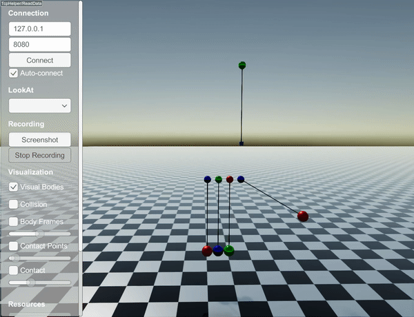

Constraints
Length constraints
RaiSim currently has three types of length constraints:
All length constraints offer three stretch types: STRETCH_RESISTANT_ONLY,
COMPRESSION_RESISTANT_ONLY, BOTH. The first two are unilateral constraints
(i.e., acting only in one direction) and BOTH is a bilateral constraint
(i.e., acting in both directions). The stretch types are explained in
StiffLengthConstraint.
You can find a short example in examples/src/server/length_constraints_newtons_cradle.cpp. This code simulates the following behavior:

How constraints are solved
RaiSim supports two different enforcement paths for constraints:
StiffLengthConstraint (hard): converted into a contact problem and solved by the contact solver as an impulse constraint. This behaves like a hard constraint and is handled alongside collisions.
CompliantLengthConstraint / CustomLengthConstraint (soft): applied as explicit forces each step (spring or user-defined tension). These do not go through the contact solver and therefore behave more like soft constraints.
Pin constraints for closed-loop systems are also solved by the contact solver
(as equality constraints), but they are specified in the URDF under
<constraints> rather than through the length-constraint API.
API
LengthConstraint
-
class LengthConstraint : public raisim::Constraints
Subclassed by raisim::CompliantLengthConstraint, raisim::CustomLengthConstraint, raisim::StiffLengthConstraint
Public Functions
-
void update(contact::ContactProblems &contact_problems)
update internal variables (called by World::integrate1())
-
double getLength() const
- Returns:
the length of the wire
-
inline double getVisualizationWidth()
get wire width for visualization
- Returns:
width
-
inline void setVisualizationWidth(double width)
set visualization width
- Parameters:
width – width
-
double getDistance() const
- Returns:
the distance between the two mounting points
-
const Vec<3> &getNorm() const
- Returns:
the direction of the normal (i.e., p2-p1 normalized)
-
size_t getLocalIdx1() const
- Returns:
the local index of object1
-
size_t getLocalIdx2() const
- Returns:
the local index of object2
-
double getStretch() const
- Returns:
the stretch length (i.e., constraint violation)
-
inline void setName(const std::string &name)
set name of the wire
- Parameters:
name – the constraint’s name
-
inline const std::string &getName() const
get name of the wire
- Returns:
the wire name
-
inline void setStretchType(StretchType type)
set stretch type of the wire Check http://raisim.com/sections/StiffLengthConstraint.html
- Parameters:
type – the wire stretch type. Available types: STRETCH_RESISTANT_ONLY, COMPRESSION_RESISTANT_ONLY, BOTH
-
inline StretchType getStretchType() const
get the constraint’s stretch type
- Returns:
the wire stretch type
-
inline WireType getWireType() const
get wire type
- Returns:
wire type
-
const Vec<3> &getOb1MountPos() const
get pos on ob1 where the wire is attached
- Returns:
mount position 1
-
const Vec<3> &getOb2MountPos() const
get pos on ob2 where the wire is attached
- Returns:
mount position 2
Public Members
-
bool isActive
True when the constraint is active in the solver.
-
void update(contact::ContactProblems &contact_problems)